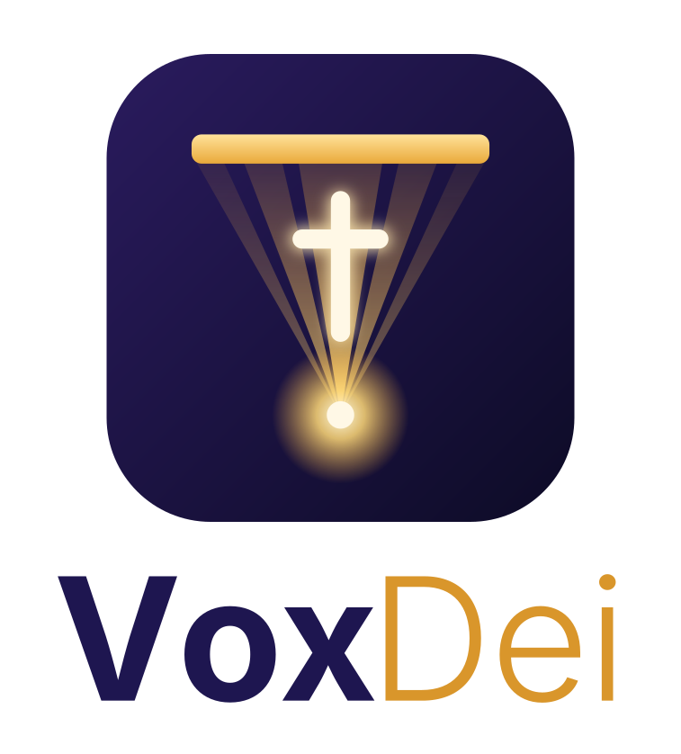

La pantalla de tu iglesia, controlada desde tu celular.
Usa el cable HDMI. En Windows, pulsa las teclas Windows + P y elige Duplicar (en las dos pantallas se ve lo mismo) o Extender (el proyector es una pantalla aparte).
Entra a la dirección de abajo, inicia sesión y pulsa Presentación. Se abre una ventana nueva: si elegiste Extender, arrástrala hasta el proyector.
Toca el botón grande del centro para ponerla en pantalla completa. Ese toque también deja que los videos suenen.
En el celular entra a la misma dirección con tu cuenta y pulsa Administrador. Lo que envíes —versículos, canciones, anuncios, imágenes— aparece al instante en el templo.